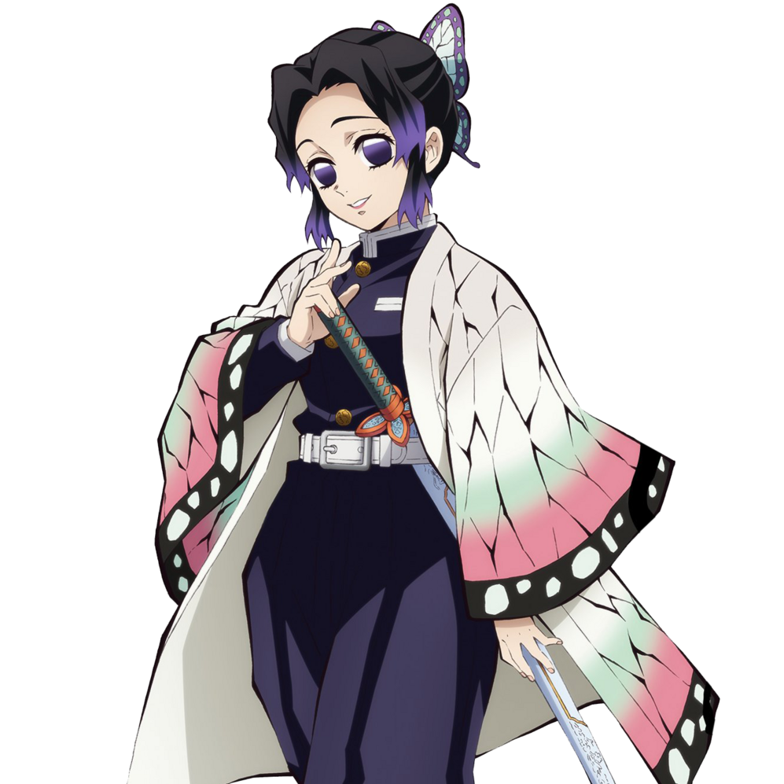

胡蝶忍（こちょう しのぶ Kochou Shinobu）
- 配音 : 早見沙織（日本）；馮嘉德（台灣）；龜娘（中國大陸）；Erika Harlacher（美國）；植婉雯（Viu）、黃昕瑜（TVB）（香港）
-
鬼殺隊蟲柱，蟲之呼吸的使用者。帶著蝴蝶髮飾、把頭髮盤成夜會卷的少女，鬼殺隊制服外披著蝶翅紋圖案的羽織，是其已故姐姐香奈惠的遺物。鬼殺隊制服由「隱」的前田正夫所製作，初期制服的設計是和甘露寺蜜璃一樣露胸的暴露造型，但她在看過制服後就當著前田的面放火燒掉了。害怕接觸貓狗等有體毛的生物。是唯一無法砍下鬼的腦袋的柱，相對的卻是個厲害的製毒師，以藤花為原料製造出各種毒殺招式，除此之外還經營名為「蝶屋敷」的醫療設施，因為精通藥學，所以負責治療受重傷的隊員。
日輪刀是請鍛刀村村長特殊設計過，整把刀除了刀尖外其他地方均沒有刀刃，因此十分輕巧，腕力不足的忍也能輕鬆使用，能夠往刀尖注射毒藥，並且主要都是以刺擊的方式將毒藥刺進鬼的體內。
出身藥學世家，原本幸福的一家四口在鬼入侵後遭遇重大巨變，父母被鬼殺害，她與姐姐香奈惠在差點遭到毒手時，被岩柱．悲鳴嶼拯救。後兩姊妹立下一同變強保護無辜人民的願望，她們從鬼殺隊的隱成員那裡打聽到悲鳴嶼的住處，為了報恩而找上悲鳴嶼，起初，不信任小孩子的悲鳴嶼為了趕走兩姊妹，對她們出了道難題一「推動巨大沉重的岩石」，儘管這對女孩子來說是個艱難的任務，兩姐妹還是用計把岩石稍微移動了一點，悲鳴嶼被她們的毅力所感動，於是找了優秀的培養師加以培育，讓她們順利通過了選拔進入鬼殺隊，其間兩姐妹收留差點被人販子賣掉的少女香奈乎作為繼子。在此之前亦曾有多位繼子，但除香奈乎其他皆已在與鬼的戰鬥中喪命，14歲時姊姊香奈惠也被上弦之貳·童磨殺害，但因為太陽快出來了使上弦之貳不得不逃跑，因而留下了香奈惠的屍體。悲痛欲絕的忍在辦完香奈惠的喪禮後，收起以往強硬嚴肅不苟言笑的性格，開始笑容滿面的待人，一言一行都在模仿自己的姐姐，悲鳴嶼為此對她的改變感到難過與惋惜。為了替姐姐報仇，她將自己作為第一個人體實驗對象，持續不斷地攝取藤花毒，讓全身器官和血液充斥著37公斤，致死量700倍的毒素。
初登場於那田蜘蛛山篇。主公派遣其與富岡義勇一同前往那田蜘蛛山支援，先是替被蜘蛛「哥哥」下毒而即將變成蜘蛛的善逸解毒後，毒殺了蜘蛛鬼「姊姊」。打算斬殺禰豆子時，被富岡阻止。在柱合會議上討論炭治郎的裁決時，立場偏於中立。裁決結束後將受傷的炭治郎等人帶往蝶屋敷治療。某個晚上獨自去見炭治郎與炭治郎談話時，被炭治郎聞到她身上那一股「憤怒的氣味」，而她本人也不否認，並提到從姐姐被鬼殺死的那一刻起，她無時無刻皆憎恨著鬼，即使如此也繼承姐姐「希望人與鬼友好」的願望，但面對為保身而撒謊、最後露出本性襲擊人的鬼，內心深處積蓄著難以釋懷的厭惡感，這樣的日子久了讓她覺得相當疲憊。知道炭治郎擁有與自己相似的過去，表示不會動搖救鬼的信念，並將這種想法寄託給炭治郎。
並沒有和其他的柱一同參與開啟斑紋的訓練，因為把目標鎖定在當年殺死香奈惠的上弦之貳·童磨身上，知道自己實力不足的情況下不能正面打敗對方，所以採用了非常偏激的作戰方式：不斷服食珠世配製的藥，使全身充滿毒素，若所有自製的毒都無效，就直接讓嗜食年輕女子的對方把自己連同大量的毒素吃下去。最終戰時與其他柱一同受困無限城，如願遇上童磨並與之交戰，面對童磨壓倒性的戰力而慘敗，為了降低童磨的戰鬥能力而執行最終計畫，死前想起了炭治郎曾問過他的話，以及家人及蝶屋的孩子，並製造了機會留給香奈乎了結童磨。死後碰見童磨，對童磨的示愛邀請其一同前往地獄表達嘲諷及拒絕後，與姐姐香奈惠一同離開，在天堂與父母重聚。是最終決戰中第一個陣亡的柱級隊員。
在無限城大戰前曾與珠世及愈史郎設計於無慘。研發了當「變回人類的藥」失效時，會再合成「每1分鐘老化50年」的毒藥。以前者被分解為前提，混合後者後所產生的毒素。漫畫最終話，一對神似香奈惠和忍的女高中生和炭治郎的曾孫炭彥擦身而過。
在鬼滅學園就讀高中三年蓬班，隸屬於藥學研究部與擊劍部。
在第一回人氣投票結果中，以1813票獲得第6名。在第二回人氣投票結果中，以8787票獲得第5名。